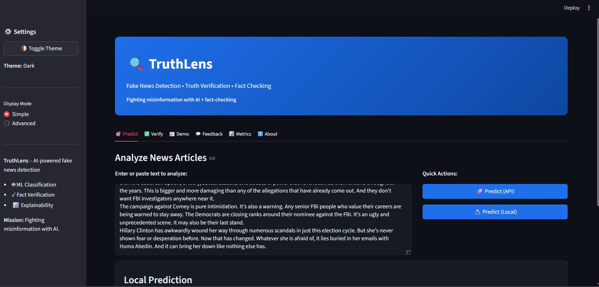
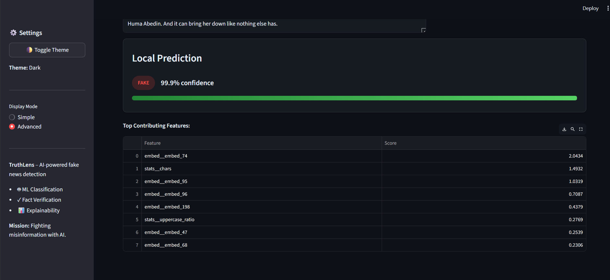
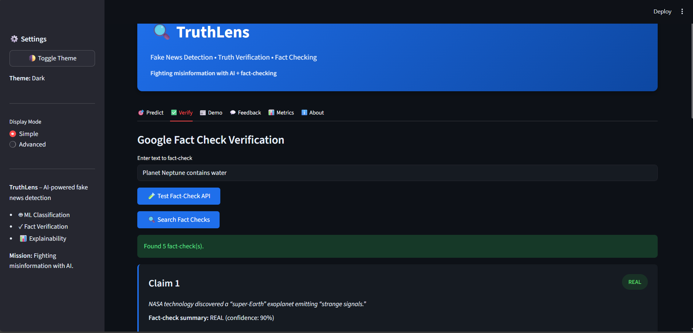
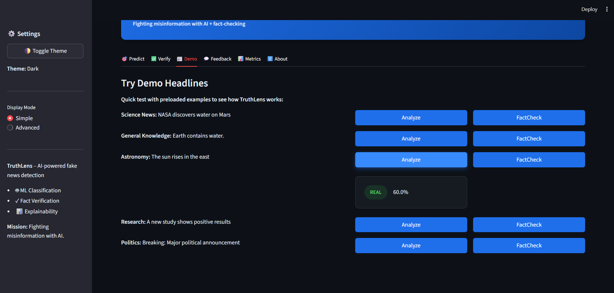
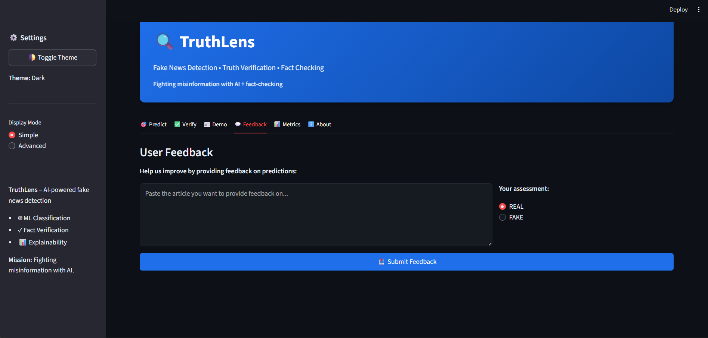
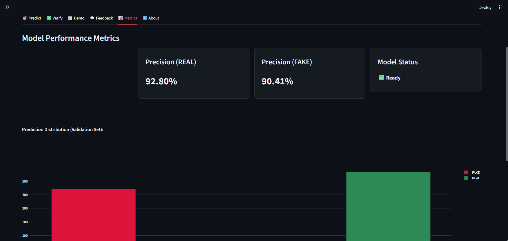
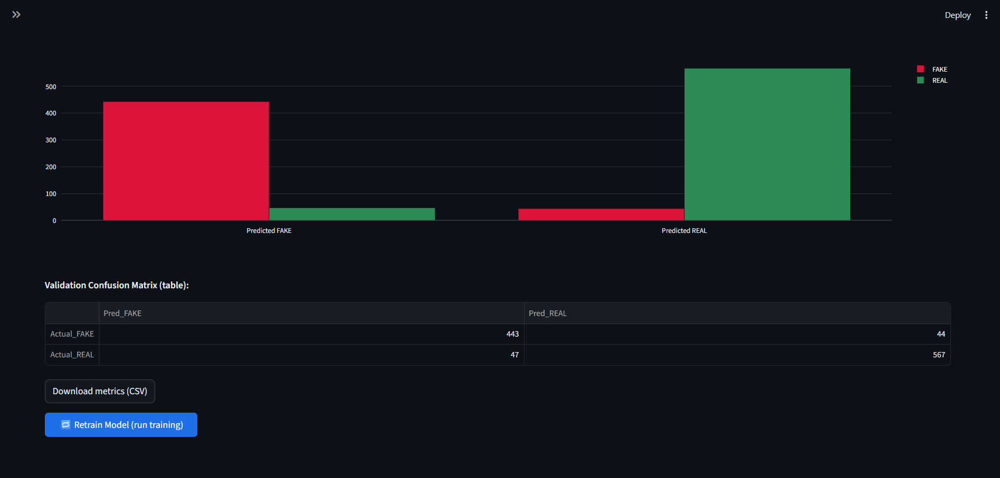
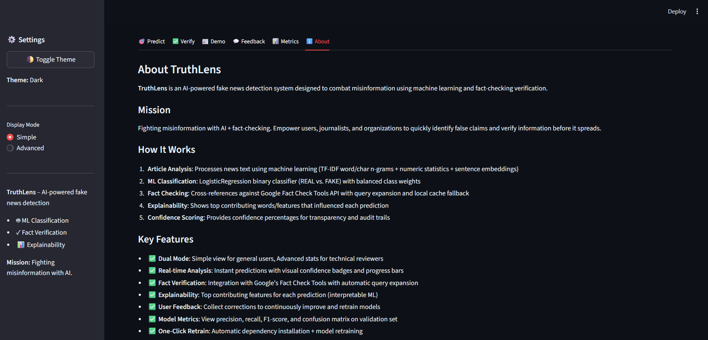

An end-to-end misinformation detection and verification system designed for short-form news text, combining ML classifiers with fact-checking APIs.
TruthLens is an end-to-end misinformation detection and
verification system designed for short-form news text. It combines a
lightweight, interpretable machine-learning classifier—built using
TF-IDF word and character n-grams, numeric text features, and optional
sentence embeddings—with a Logistic Regression decision layer for
fast, explainable predictions. To increase reliability beyond
traditional ML models, TruthLens integrates a fact-checking module
that queries the Google Fact Check Tools API and automatically falls
back to a local cached index when live results are unavailable.
The system is deployed through a streamlined multi-tab Streamlit
dashboard that supports real-time prediction, transparent model
explanations (feature contributions and confidence scores), verified
fact-check retrieval, user feedback submission, and performance
monitoring through metrics such as confusion matrix, precision,
recall, and F1-score. On a held-out validation set, TruthLens achieves
approximately 91.5% accuracy with balanced performance across both
REAL and FAKE classes. When paired with the fact-checking layer, the
system provides high-confidence automated flagging and a
human-in-the-loop review path for ambiguous cases.
TruthLens is built for extensibility, enabling the addition of new
fact-check sources, transformer-based embeddings, and active-learning
loops. Its modular architecture makes it suitable for integration into
media-monitoring pipelines, journalistic verification workflows, and
educational tools focused on digital literacy.







